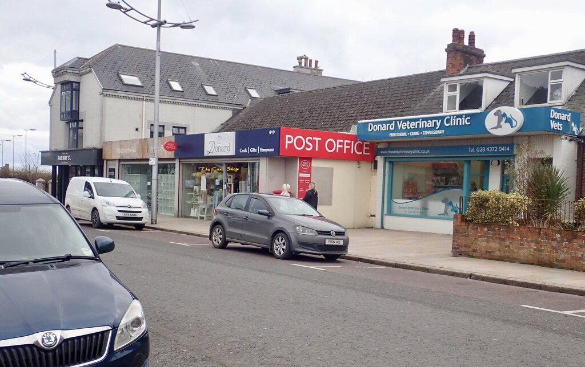

Replace
Donard Veterinary — Railway Street exterior
Flat overcast street record. Half the frame is Post Office red, parked cars, and a cropped Skoda in the foreground. The clinic itself is a minor strip of teal signage. Truthful about the address; useless as a care brand signal.
Prefer: warm clinic mood (hands/animal care illustration), calm pet atmosphere, or keep the functional services rail and drop the photo panel.